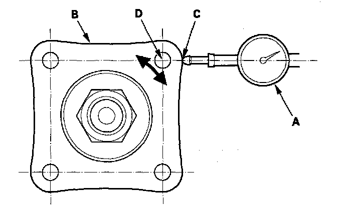
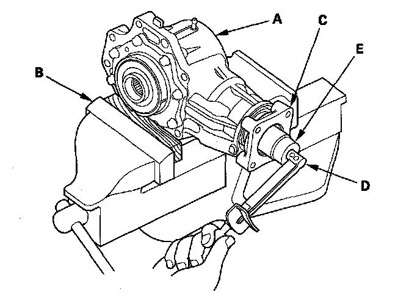

Inspection
InspectionTransfer Gear Backlash Measurement
1. Set a dial indicator (A) on the transfer companion flange (B); position dial indicator tip (C) on the direct extension of the bolt hole center (D).

2. Measure the transfer gear backlash.
Standard: 0.06-0.16 mm (0.02-0.06 in.)
Total Starting Torque Measurement
3. Secure the transfer housing (A) in a bench vise (B) with soft jaws. To prevent damage to the transfer housing, always use soft jaws or equivalent materials between the transfer housing and the vise.

4. Rotate the companion flange several turns to seat the tapered roller bearings.
5. Measure the starting torque at the companion flange (C) with a torque wrench (D) and a socket (E).
Standard: 2.64-4.23 N-m
(26.9-43.1 kgf-cm, 23.3-37.4 lbf-in.)
6. If the measurements are out of standard, disassemble the transfer assembly and repair it.